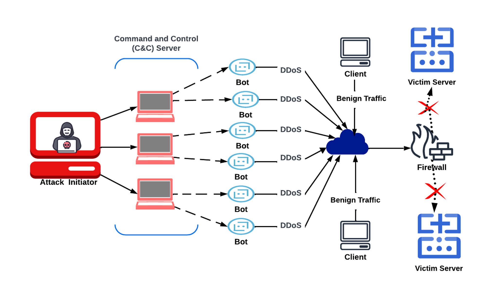
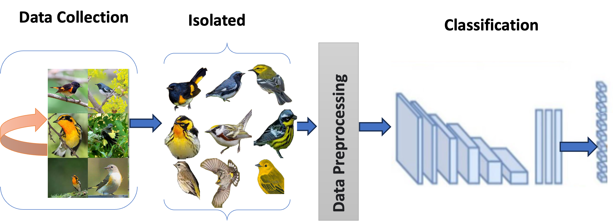

Hello, I’m Ali Alfatemi
Ph.D. Candidate & Teaching Fellow in Computer & Information Science at Fordham University.
My research focuses on AI for Network Security, Large Language Models, Machine Learning, and Computer Vision.
Latest News
Excited that our paper, "Vision-Language Integration for Image Captioning Using Vision Transformers and GPT-J," has been accepted for Oral Presentation at the AIPR 2025 Workshop.
Our paper, "A Two-Stage LLM-Enhanced DDoS Detection Framework for Next-Generation IoT and Edge Networks," has been accepted to the IEEE GLOBECOM 2025 CISS Symposium.
Seeking Opportunities
I am actively seeking Summer 2026 internships and full-time research scientist or ML engineer roles upon my graduation in Spring 2026.
Research
I am passionate about leveraging advanced computational techniques to solve complex problems in cybersecurity and artificial intelligence. My primary research interests include:
- AI for Network Security
- Large Language Models (LLMs)
- Machine Learning & Deep Learning
- Computer Vision
Publications
-
Ali Alfatemi, Mohamed Rahouti, Zakirul Alam Bhuiyan, Abdellah Chehri, Mohammed Aledhari, Gwanggil Jeon. “Enhancing DDoS Detection for Edge Networks With Noise-Tolerant Shallow Neural Networks in Computational Social Systems.” IEEE Transactions on Computational Social Systems, Early Access, pp. 1–14, 2025.
IEEE TCSS Early Access DOI: 10.1109/TCSS.2025.3620674High-level depiction of the DDoS threat model and traffic flow referenced in the TCSS article. Click image to expand. -
Ali Alfatemi, Mohamed Rahouti, Majjed Al-Qatf, Senthil Kumar Jagatheesaperumal. "Foreground-Centric Learning Improves Robustness in Fine-Grained Visual Recognition." Signal, Image and Video Processing (Springer), 19(14), 2025.
Springer DOI: 10.1007/s11760-025-04758-5High-level diagram of the foreground-centric learning pipeline. Click image to expand. -
Ali Alfatemi, Hong Peng, Wentao Rong, Bin Zhang, Hongmin Cai. "Patient Subgrouping with Distinct Survival Rates via Integration of Multiomics Data on a Grassmann Manifold." BMC Medical Informatics and Decision Making 22(1), 190, 2022.
-
Ali Alfatemi, Mohamed Rahouti, Zakirul Alam Bhuiyan, Aiman Solyman, Mohammed Aledhari. "ProtoMAML: A Hybrid Meta-Learning Approach Integrating Prototypical Networks for Data-Efficient DDoS Attack Detection." 2025 International Wireless Communications and Mobile Computing (IWCMC), IEEE, pp. 1144–1149, 2025.
-
Ali Alfatemi, Mohamed Rahouti, D. Frank Hsu, Christina Schweikert, Nasir Ghani, Aiman Solyman, Mohammad I. Saryuddin Assaqty. "Identifying Distributed Denial of Service Attacks Through Multi-Model Deep Learning Fusion and Combinatorial Analysis." Journal of Network and Systems Management 33(1), article 8, 2025.
-
Ali Alfatemi, Diogo Oliveira, Mohamed Rahouti, Abdelatif Hafid, Nasir Ghani. "Precision DDoS Detection Through Gaussian Noise-Augmented Neural Networks." 2024 15th International Conference on Network of the Future (NoF), pp. 178–185, 2024.
-
Ali Alfatemi, Mohamed Rahouti, Ruhul Amin, Sarah ALJamal, Kaiqi Xiong, Yufeng Xin. "Advancing DDoS Attack Detection: A Synergistic Approach Using Deep Residual Neural Networks and Synthetic Oversampling." arXiv preprint arXiv:2401.03116, 2024.
-
Ali Alfatemi, Sarah A.L. Jamal, Nasim Paykari, Mohamed Rahouti, Abdellah Chehri. "Multi-Label Classification with Deep Learning and Manual Data Collection for Identifying Similar Bird Species." Procedia Computer Science 246, 558–565, 2024.
-
Ali Alfatemi, Sarah A.L. Jamal, Nasim Paykari, Mohamed Rahouti, Ruhul Amin, Abdellah Chehri. "Refining Bird Species Identification Through GAN-Enhanced Data Augmentation and Deep Learning Models." Procedia Computer Science 246, 548–557, 2024.
-
Ali Alfatemi, Mohamed Rahouti, Frank Hsu, Christina Schweikert. "Advancing NCAA March Madness Forecasts Through Deep Learning and Combinatorial Fusion Analysis." Intelligent Systems Conference, 2024.
-
H. Wondimu, Ali Alfatemi, Mohamed Rahouti, Abdellah Chehri, P. Weichbroth, Nasir Ghani. "Enabling Real-Time, Explainable DDoS Mitigation via On-Premise Large Language Models and Flow Analysis." Procedia Computer Science 270, 1390–1399, 2025.
-
M. Aledhari, Mohamed Rahouti, Ali Alfatemi. "Towards Equitable ASD Diagnostics: A Comparative Study of Machine and Deep Learning Models Using Behavioral and Facial Data." arXiv preprint arXiv:2411.05880, 2024.
-
Nasim Paykari, R. Jokar, Ali Alfatemi, Damian Lyons, Mohamed Rahouti. "Optimizing Control Strategies for Wheeled Mobile Robots Using Fuzzy Type I and II Controllers and Parallel Distributed Compensation." arXiv preprint arXiv:2409.17161, 2024.
-
Z. Mahmoud, N. Kryvinska, M. Abdalsalm, A. Solyman, Ali Alfatemi, et al. "Toward Utilizing Bidirectional Multi-head Attention Technique for Automatic Correction of Grammatical Errors." IAENG International Journal of Computer Science 51(11), 2024.
-
Nasim Paykari, Ali Alfatemi, Damian Lyons, Mohamed Rahouti. "Integrating Robotic Navigation with Blockchain: A Novel PoS-Based Approach for Heterogeneous Robotic Teams." 2024 21st International Conference on Ubiquitous Robots (UR).
-
Martinez, Fernando and Mapkar, Mariyam and Alfatemi, Ali and Rahouti, Mohamed and Xin, Yufeng and Xiong, Kaiqi and Ghani, Nasir "Redefining DDoS Attack Detection Using a Dual-Space Prototypical Network-Based Approach." 2024 33rd International Conference on Computer Communications and Networks (ICCCN), pp. 1–9.
-
Jagatheesaperumal, Senthil Kumar and Rahouti, Mohamed and Alfatemi, Ali and Ghani, Nasir and Quy, Vu Khanh and Chehri, Abdellah "Enabling Trustworthy Federated Learning in Industrial IoT: Bridging the Gap Between Interpretability and Robustness." IEEE Internet of Things Magazine 7(5), 38–44, 2024.
-
Solyman, Aiman and Zappatore, Marco and Zhenyu, Wang and Mahmoud, Zeinab and Alfatemi, Ali and Ibrahim, Ashraf Osman and Gabralla, Lubna Abdelkareim "Optimizing the Impact of Data Augmentation for Low-Resource Grammatical Error Correction." Journal of King Saud University – Computer and Information Sciences 35(6), 101572, 2023.
-
Mahmoud, Zeinab and Li, Chunlin and Zappatore, Marco and Solyman, Aiman and Alfatemi, Ali and Ibrahim, Ashraf Osman and Abdelmaboud, Abdelzahir "Semi-Supervised Learning and Bidirectional Decoding for Effective Grammar Correction in Low-Resource Scenarios." PeerJ Computer Science 9, e1639, 2023.
-
Mohammad I. Saryuddin Assaqty, Y. Gao, Ali Alfatemi, et al. "PBEMS: A Permissioned Blockchain-based Equipment Maintenance System in Smart Manufacturing." Preprints, 2023.
Patents
-
Hongmin Cai, Ali Alfatemi. "A method and system for identifying cancer subtypes based on multi-omics data sets." Chinese Patent CN113537358B, issued September 1, 2023.
Professional Service
I am an active contributor to the academic community as a peer reviewer for several reputable journals and conferences:
- Information Fusion
- SAC 2024
- IEEE WCCI 2024
- The Journal of Supercomputing
- Artificial Intelligence Review
- Cluster Computing
- Scientific Reports
- IEEE Transactions on Network and Service Management
- IJCNN 2025
- And many others...
Get In Touch
I'm always open to discussing new research, projects, or collaboration opportunities.
Feel free to reach out!